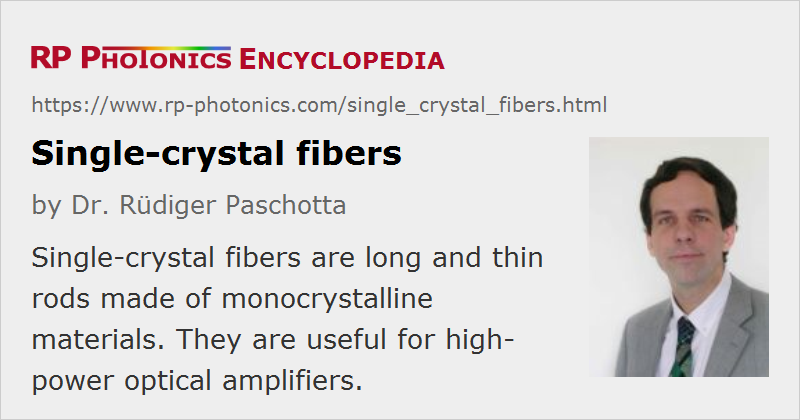

Single-crystal Fibers
Definition: long and thin rods made of monocrystalline materials
More general term: optical fibers
German: Einkristall-Fasern
Category: fiber optics and waveguides
How to cite the article; suggest additional literature
Author: Dr. Rüdiger Paschotta
Single-crystal fibers are long and thin rods of monocrystalline material, usually having a diameter below 1 mm (in extreme cases even only a few microns) and a length between 10 cm and several meters. Mostly due to their geometry, they are called fibers, although many of them are not sufficiently thin and stable to allow substantial bending.
This article focuses on fiber for optical applications; there are also mechanical applications, for example suspensions with low thermal noise for highly sensitivity interferometers.
Although work on single-crystal fibers has been done over many years, much of it is still at the research state, i.e., not yet widely applied in laser technology.
Single-crystal fibers are not to be confused with photonic crystal fibers, which usually consist of glass or polymers.
Fabrication Methods
Pedestal Growth Methods
The most common fabrication method for such devices is laser-heated pedestal growth (LHPG): the tip of a monocrystalline rod is heated with a laser (usually a CO2 laser) and slowly pulled upward (e.g. with a few millimeters per minute), where it soon becomes solid again. The diameter of the obtained fiber is typically about three times smaller than that of the source crystal. The molten zone (float zone) is hold together by surface tension rather than by contact with the crucible, so that contamination with impurities is avoided.
A fiber length of e.g. 1 m or more can be produced, but unfortunately that growth method is rather slow (far slower than drawing glass fibers), and only a single crystal fiber can be grown at a time with the used apparatus. It is also sensitive to disturbances e.g. from air flow, vibrations or laser power fluctuations, which can easily cause irregularities at the surface.
The method can utilize not only single crystal source materials (e.g. oxides and semiconductors), but also polycrystalline materials and even pressed or sintered powder.
Besides laser heating, one can use other methods of heating, e.g. induction heating in case of semiconductors.
Edge-defined Film-fed Growth
An alternative method for faster growth is edge-defined film-fed growth (EFG). Here, the growth material is supplied through one or several capillaries e.g. in a molybdenum die, the diameter of which essentially determines the obtained fiber diameter. Compared with laser-heated growth, film-fed growth can be more easily used for growing multiple fibers at the same time, but has the disadvantage of contaminating the fibers with material from the die.
Micro-Pulling-Down Method
A variant of the film-fed growth is the micro-pulling-down (μ-PD) method, where the crystal is pulled downwards. As in the conventional film-fed growth method, the molten fresh material is supplied through a thin channel into the growth zone.
Materials for Single-crystal Fibers
Most single-crystal fibers are made from some oxides crystal materials, being chemically and mechanically quite stable. The most common materials are:
- Sapphire (Al2O3) is a particularly hard material with high thermal conductivity, exhibiting a wide transparency region ranging up to 3.2 μm (i.e., far more into the infrared than silica). It can be doped with Ti3+ ions to obtain very broadband laser crystals (→ titanium–sapphire lasers).
- YAG (Y3Al5O12) is also quite hard and can well be doped with many rare-earth gain materials. Due to its cubic crystal structure, its crystal orientation does not matter for most purposes.
- There are various other oxides, e.g. other garnet crystal materials such as GGG (Gd3Ga5O12), having somewhat similar properties as YAG, also spinel (MgAl2O4).
Some other materials can also be used, but their application is at a more experimental stage:
- Some fluoride crystals (e.g. LiF) have a very wide spectral transmission range.
- Nonlinear crystal materials like lithium niobate (LiNbO3) can also be used, e.g. for optical parametric amplifiers.
- Semiconductors like silicon (Si), germanium (Ge) or silicon–germanium (SiGe) exhibit transmission in the infrared with strong optical χ(3) nonlinearities.
As mentioned above, many single-crystal fibers can be used as laser-active (amplifying) devices when they are doped e.g. with rare-earth ions like Yb3+, Nd3+, Er3+ or Tm3+, or with transition metal ions like Ti3+.
Comparison with Glass Fibers
Single-crystal fibers are similar to common optical glass fibers in terms of their geometrical shape (long, thin and cylindrical) and to some extent concerning their fabrication (pulling from a thicker source block, a preform).
On the other hand, in contrast to real fibers they usually do not contain a fiber core; multimode waveguiding can be achieved only based on the strong refractive index contrast at the crystal–air interface. A cladding layer with a slightly lower refractive index around a core glass would help to reduce the propagation losses and possibly to allow for single-mode guidance, but is difficult to fabricate [4]; some dip coating techniques and other techniques are applied only in rare cases [13, 18]. For high-power operation, there is also a contribution of thermal lensing, which can substantially affect the mode structure. Furthermore, a substantial approximately parabolic index profile can occur e.g. due to inhomogeneity of the doping profile and possibly thermal stress during fabrication [10].
Compared with optical glass fibers, single-crystal fibers allow only very limited bending.
They are operated with a far larger effective mode area, so that the optical intensities for given optical power level are much lower, and material nonlinearities have a much lower effect. Also, the optical damage threshold is correspondingly higher.
For these reasons, single-crystal fibers are suitable for far higher power levels, particularly in the domain of ultrashort pulse amplification. On the other hand, it is tentatively more difficult to obtain a high output beam quality due to the inherent multimode nature.
The other essential difference is the use of monocrystalline rather than amorphous material. Consequences of that are that one can often achieve much higher doping concentrations of laser-active ions, and the absorption and emission spectra of rare-earth ions normally exhibit a substantially smaller bandwidth in crystalline materials. The small bandwidth also implies higher transition cross sections, resulting in stronger pump absorption, higher gain and lower gain saturation fluences and intensities.
Typical Properties
Propagation losses in single-crystal fibers are usually substantially higher than in the corresponding bulk materials (or in glass fibers), mostly due to scattering losses at the surface, which exhibits surface defects like growth stripes and has a very strong refractive index contrast (far higher than for the core–cladding interface of a regular fiber). However, they can be well below 1 dB/m or even below 0.1 dB/m, so that they do not seriously reduce the power efficiency of the devices.
The used materials often have a good infrared transmission range, so that sometimes they can be an alternative to mid-infrared fibers based on glasses or polycrystalline material – for example, for transmitting the outputs of Er:YAG lasers at 2.9 μm. Compared to mid-IR fibers, they may allow to transmit much higher optical powers with lower optical power losses. However, they usually cannot be used at similarly long wavelengths as some infrared fibers.
Compared with usual laser crystals, single-crystal fibers offer a far higher propagation length, so that correspondingly higher optical gain can be achieved – e.g. 20 dB or even more. Despite the long length and relatively small beam diameter, no extraordinarily high pump beam quality is required, since the waveguiding effect from the crystal–air interface can be exploited (although at the cost of increased scattering losses).
Suppliers
The RP Photonics Buyer's Guide contains 6 suppliers for single-crystal fibers.
Questions and Comments from Users
Here you can submit questions and comments. As far as they get accepted by the author, they will appear above this paragraph together with the author’s answer. The author will decide on acceptance based on certain criteria. Essentially, the issue must be of sufficiently broad interest.
Please do not enter personal data here; we would otherwise delete it soon. (See also our privacy declaration.) If you wish to receive personal feedback or consultancy from the author, please contact him e.g. via e-mail.
By submitting the information, you give your consent to the potential publication of your inputs on our website according to our rules. (If you later retract your consent, we will delete those inputs.) As your inputs are first reviewed by the author, they may be published with some delay.
Bibliography
| [1] | C. A. Burrus and J. Stone, “Single-crystal fiber optical devices: A Nd:YAG fiber laser”, Appl. Phys. Lett. 26 (6), 318 (1975), doi:10.1063/1.88172 |
| [2] | R. S. Feigelson, “Growth of fiber crystals”, in E. Kaldis, Crystal Growth of Electronic Materials, p. 127, ISBN 0-444-86919-0 (1985) |
| [3] | S. Sudo et al., “MgO:LiNbO3 single-crystal fiber with magnesium-ion in-diffused cladding”, Opt. Lett. 12 (11), 938 (1987), doi:10.1364/OL.12.000938 |
| [4] | M. J. F. Diggonet et al., “Clad Nd:YAG fibers for laser applications ”, J. Lightwave Technol. 5 (5), 642 (1987), doi:10.1109/JLT.1987.1075555 |
| [5] | J. A. Harrington and C. C. Gregory, “Hollow sapphire fibers for the delivery of CO2 laser energy”, Opt. Lett. 15 (10), 541 (1990), doi:10.1364/OL.15.000541 |
| [6] | J. D. Dai and C. K. Jen, “Analysis of cladded uniaxial single-crystal fibers”, J. Opt. Soc. Am. A 8 (12), 2021 (1991), doi:10.1364/JOSAA.8.002021 |
| [7] | G. N. Merberg and J. A. Harrington, “Optical and mechanical properties of single-crystal sapphire optical fibers”, Appl. Opt. 32 (18), 3201 (1993), doi:10.1364/AO.32.003201 |
| [8] | M. Wakaki et al., “Fiber-optic polarizer using birefringent crystal as a cladding”, Appl. Opt. 35 (15), 2591 (1996), doi:10.1364/AO.35.002591 |
| [9] | R. K. Nubling and J. A. Harrington, “Optical properties of single-crystal sapphire fibers”, Appl. Opt. 36 (24), 5934 (1997), doi:10.1364/AO.36.005934 |
| [10] | J. H. Sharp et al., “Graded-index characteristics in single-crystal fibers”, Opt. Lett. 23 (2), 109 (1998), doi:10.1364/OL.23.000109 |
| [11] | J. Didierjean et al., “High-power laser with Nd:YAG single-crystal grown by the micro-pulling-down technique”, Opt. Lett. 31 (23), 3468 (2006), doi:10.1364/OL.31.003468 |
| [12] | J. H. Kim et al., “Broadband IR supercontinuum generation using single crystal sapphire fibers”, Opt. Express 16 (6), 4085 (2008), doi:10.1364/OE.16.004085 |
| [13] | J. Ballato et al., “Glass-clad single-crystal germanium optical fiber”, Opt. Express 17 (10), 8029 (2009), doi:10.1364/OE.17.008029 |
| [14] | M. R. B. Andreeta and A. C. Hernandes, “Laser-Heated Pedestal Growth of Oxide Fibers”, in G. Dhanaraj et al., Springer Handbook of Crystal Growth, p. 393, ISBN 978-3-540-74182-4 (2010) |
| [15] | I. Martial et al., “Nd:YAG single-crystal fiber as high peak power amplifier of pulses below one nanosecond”, Opt. Express 19 (12), 11667 (2011), doi:10.1364/OE.19.011667 |
| [16] | A. Okhrimchuk et al., “Low loss depressed cladding waveguide inscribed in YAG:Nd single crystal by femtosecond laser pulses”, Opt. Express 20 (4), 3832 (2012), doi:10.1364/OE.20.003832 |
| [17] | X. Délenet al., “250 W single-crystal fiber Yb:YAG laser”, Opt. Lett. 37 (14), 2898 (2012), doi:10.1364/OL.37.002898 |
| [18] | C.-C. Lai et al., “Toward single-mode active crystal fibers for next-generation high-power fiber devices”, Appl. Mater. Interfaces 6 (16), 13928 (2014), doi:10.1021/am503330m |
See also: fibers, laser crystals, mid-infrared fibers
and other articles in the category fiber optics and waveguides
|  |
If you like this page, please share the link with your friends and colleagues, e.g. via social media:
These sharing buttons are implemented in a privacy-friendly way!